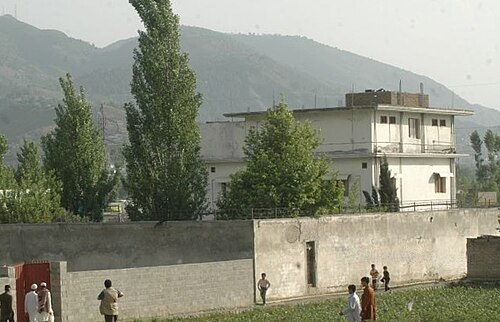

Hunt for Osama bin Laden
Osama bin Laden
Osama bin Laden was the founder of al-Qaeda and the primary architect behind the September 11, 2001 attacks in the United States. Following the attacks, he became the most wanted individual in the world and the focus of a decade-long international manhunt led primarily by the United States.
Background
Born in Riyadh, Saudi Arabia, in 1957, Osama bin Laden came from a wealthy and well-connected family. During the 1980s Soviet-Afghan War, he became involved in supporting Islamist fighters in Afghanistan, a period that helped establish his network of contacts and influence. In the years that followed, he founded al-Qaeda, which evolved into a transnational militant organization.
The Manhunt
After the September 11 attacks in 2001, the United States launched an extensive global effort to locate bin Laden. Early intelligence placed him in Afghanistan, particularly in mountainous regions along the Afghanistan-Pakistan border. Despite heavy military operations in the region, including the Battle of Tora Bora in late 2001, he managed to evade capture.
A major turning point in the search came when U.S. intelligence shifted focus away from large-scale sweeps and toward human networks. Analysts began tracking a trusted courier believed to be closely connected to bin Laden. Rather than locating the target directly, investigators patiently followed the courier's movements, a strategy that would ultimately lead them to a previously unremarkable compound in Abbottabad, Pakistan.
CIA captured aerial images of the compound.
Discovery & Operation Neptune Spear

The surveillance of the courier eventually led U.S. intelligence analysts to a high-walled compound in Abbottabad, Pakistan. The property drew attention because of several unusual features; its perimeter walls were significantly taller than neighboring buildings, it lacked visible telephone or internet connections and residents reportedly burned their trash rather than placing it outside for collection. Taken together, these anomalies reinforced suspicions that a high-value individual might be hiding within.
After months of monitoring the compound, U.S. officials authorized a covert raid. On May 2, 2011, U.S. Navy SEALs carried out Operation Neptune Spear, a nighttime mission conducted by helicopter. During the operation, Osama bin Laden was located inside the compound and killed.
Senior U.S. officials, including President Barack Obama, monitored developments in real time from the White House Situation Room. Shortly after the mission concluded, U.S. authorities publicly confirmed bin Laden's death, bringing an end to a manhunt that had lasted nearly a decade.
U.S. President Barack Obama and Officials gathered in the White House Situation Room to monitor the progress of the operation
Aftermath
The death of Osama bin Laden marked one of the most significant moments in the United States' post 9/11 counterterrorism campaign. The operation was widely described by officials as the result of sustained intelligence work, interagency coordination and long-term surveillance rather than a single breakthrough event.
In the years that followed, the Abbottabad compound became one of the most widely recognized locations associated with modern counterterrorism operations. The mission itself is frequently cited in discussions of intelligence-led warfare and the increasing role of targeted special operations in U.S. military strategy.